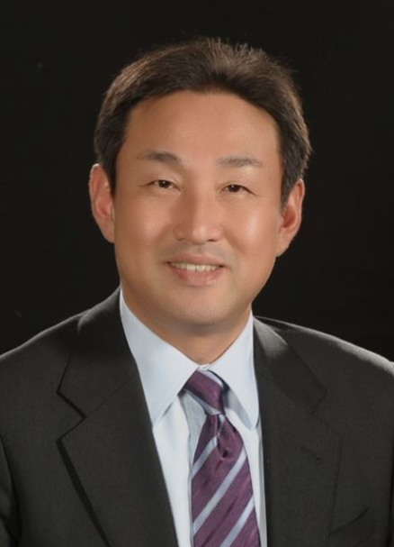
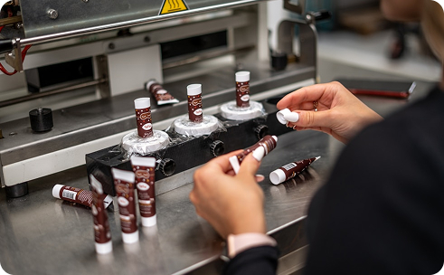
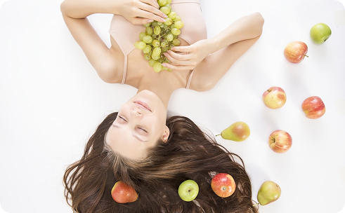
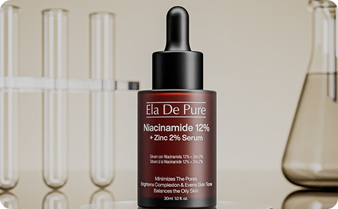

회사소개Buisiness Introduction
"건강한 아름다움을 위한 한결같은 약속"

고객과 함께 미래를 향하는 기업
오늘도 변함없이 한국화장품을 사랑해주시는 고객 여러분, 저희 홈페이지를 방문해주셔서 진심으로 감사드립니다.
한국화장품의 지난 반세기는 고객 여러분과 함께 만들어 온 시간이었습니다. 최고 품질에 대한 자긍심과 성원에 보답하려는 끊임없는 노력으로 오늘에 이르렀습니다. 앞으로도 고객 가치를 최우선하는 기업, 흔들림 없이 고객을 향해 나아가는 기업이 되겠습니다.
한국화장품(주) 대표이사 이용준
고객의 건강한 아름다움,
반세기를 고집해온 하나의 약속
한국화장품은 1962년 3월 창업 이래 고객의 건강한 아름다움을 실현하고 생활을 아름답게 가꾼다는 고객과의 약속을 지키기 위해 반세기 오직 한 길만을 고집해 왔습니다.
품질제일주의
1960년대, 부정 외래품과 불량 화장품에 시달리던 당시 제대로 된 화장품을 만들겠다는 신념으로 시작된 한국화장품은 남성용 '단학포마드', 여성용 '쥬단학'을 시작으로 우수한 품질의 제품만이 소비자로부터 사랑받을 수 있다는 믿음으로 반세기를 '품질제일주의' 정신에 입각하여 제품을 생산하고 있습니다.
한국화장품 현황
- 창립 1962
- 보유 특허 500+
- 품질 인증 CGMP
- 해외 진출 3개국
한국화장품이 지키는 세 가지 가치
-

01 QUALITY- 타협하지 않는 품질
- 제대로 된 화장품을 만들겠다는 신념 하나로, 반세기 동안 품질제일주의 원칙을 지켜왔습니다.
-

02 CUSTOMER VALUE- 고객가치 우선
- 고객의 건강한 아름다움을 실현하고 생활을 아름답게 가꾼다는 약속을 지키는 것, 그것이 한국화장품이 존재하는 이유입니다.
-

03 R&D- 끊임없는 연구개발
- 다양한 고객의 요구에 발맞추기 위하여 한국화장품은 끊임없이 연구하여 최고의 화장품을 만들기 위해 노력하고 있습니다.